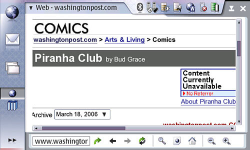

Author Archive for RogerS
Note: Links may not work or may take you to an archived page at the Internet Archive.
By RogerS April 26th, 2006
Categories: Internet tablet, Nokia 770 and OS
“What will Sun’s iPod be?” the NY Times asks today in its
article reporting Jonathan Schwartz’s ascension to the top seat at Sun.
That’s easy: Make Internet Tablets.
License what is needed from Nokia, or partner with them. Run Linux
or run Solaris, who cares? And make them in more than one size.
Then push the idea proselytized by
Remote User (aka Gene Mosher)
of the device as a window on a more powerful computer, where you really run your software.
I guess this is the idea of the diskless computer that was
temporarily popular a few years back, but that seems mostly to have
been an anti-Microsoft effort. This one will work, because you’re
untethering the computer.
The 770 is meant to access the web. (OK, it does many other wonderful things.)
But think about it from the remote control
perspective. I want a bigger screen for accessing my desktop. I want
maybe 5.5 inches width and 1024 pixels. I’m thinking of this Sun tablet
as more a business device than the 770, so I don’t worry about it being
larger. Still has to weigh little. Still needs fast, no-cost,
open-source OS. No disk drive needed (for obvious reasons). Is more RAM
useful in this context?
And low, low cost. Not $1,200 like the first Windows-based UMPC. More like the cost of an iPod.
The point is to sell so many of them so fast that the demand for
Sun’s current lines goes up. Oh, sure, that was the idea of the iPod
too, that it would feed sales of the Mac and that hasn’t happened. But
if you’re going to control a computer remotely, you want it to be
optimized for that. And if you’re going to have a lot of people doing
this at the same time . . .
Hey, maybe it makes more sense to give these tablets away to sell the bigger devices and service.
Probably, as a consequence of being business-y, I’d package a
keyboard with this device, or what some people call a thumb-board. I
haven’t used one of these, but as an add-on it makes real sense — only
buy one if you’re willing to deal with the added bulk and weight. And
need it badly.
I’d also push WiFi clouds heavily in urban areas. You need that to
make the walkaround web work for business. I mean, how much of your
business occurs away from your desk and even away from an outlet? Must
be a lot. How about exploiting that, Jonathan?
* * *
I guess I should add that these tablets benefit
greatly from the notion of running apps from a website. But I don’t
suggest that that is what makes the device appealing to a company like
Sun — much more important would be controlling your own apps from your
own server or desktop.
Can Sun do this better than Nokia? I don’t know. But I think they
could put a lot more people on the project and use this as a way of
building their core business, and promoting their open-source OS, in a
more direct fashion than Nokia. And if ever there was a way of
realizing the vision that “the network is the computer,” wow this is it.
By RogerS April 22nd, 2006
Categories: IM, Internet tablet, Nokia 770 and games
You know what I’d like to do? Be upstairs monitoring the buggy old HP
desktop I’m trying to clean from an unidentifiable infection, and play
Battleship with my son as he half-watches a TV show with his sister
that he’s seen before. Both of us using 770’s of course (we’re inching
ever closer towards that second unit).
Sure, there are lots more interactive two-player games, but we’re
partial to Battleship. And playing over a networkagainst each other
instead of the computer would be a lot more fun.
I’ve played chess this way, as an add-on in an IM program. That was
a little too interactive, too intense, to mix in with work and I
dropped it. But Battleship ought to be about perfect. I wonder: Will
Gaim take add-ons like this?
By RogerS April 21st, 2006
Categories: Internet tablet and Nokia 770
A review of the Nokia 770 at The Guardian
shows that somebody in the technology press gets it:
If the holy grail of mobile communication is to have all
the functions you need on a single device, then the long-awaited Nokia
770, based on the open-source Linux operating system, is a deep puzzle.
It lacks a word processor. It doesn’t have a spreadsheet. There is no
camera. There is no calendar. It isn’t a personal digital assistant
(PDA). And there is even a health warning attached to its calculator,
stating that it has “limited accuracy”. Oh, it doesn’t make phone
calls, either. Its selling point is that it is an “internet tablet”,
one of the first of what may be a new generation of handhelds with
instant access to the internet either through a wireless link — at home
or in local hotspots such as Starbucks — or with a Bluetooth
short-distance wireless link (which most smart phones have).
Just to make sure you know he’s being ironic about its lacks, he
spells out what we’ve got here: “As a fast link to the internet, it is
the most impressive I have encountered on a mobile device.” The review
praises the praiseworthy aspects and lets the weaker aspects be,
instead of fixing on them as proof that the 770 is destined to failure.
And then Vic Keegan writes about the “oh, I get it” insight we have all
experienced:
The more I used this device the more I was impressed
with how well it did its limited functions. Once you accept it is a
complementary product and not one that is going to replace everything
else, then it assumes a life of its own. If you want something that is
lying around the house, or by your bedside, for instant use when
needed, then this is for you. It could come of age during an era of
omnipresent Wi-Fi, enabling anytime, anywhere access to the web for
everything from word processing to blogging and video sites.
It seems strange that that acceptance is so hard for some people,
especially the know-it-alls who have seen-them-all. The Nokia 770 is
not unblemished, but the blemishes are very close to being
surface-deep, all reparable and far less significant than the things
that Nokia got right.
Were the Nokians prescient in their anticipation of “the cloudburst
of web applications we are promised” or just lucky in their timing
where predecessors were unlucky? Both, probably, but the biggest thing
about being web-prescient is that Nokia is far closer than anyone else
to achieving the super-sweet low cost that Keegan uses as a throwaway
last line (”At a lower price it would be very tempting”). Six months
from now, when the costly UMPC’s will be heavily promoted, the 770 will
be well-positioned to benefit from the interest that is aroused. The
walkaround web is going to be more and more a necessity in life, and
the 770 may ride that wave into a “you’ll never catch me” price
advantage.
By RogerS April 19th, 2006
Categories: Internet tablet, Nokia 770 and e-books
A Google group has been established to discuss FBReader — the world-class
e-book reader that runs on the Nokia 770, Linux desktop, Sharp Zaurus
and other devices.
The Google group URI is groups.google.com/group/fbreader.
The FBReader forum
at mobileread.com will continue, but the Google group permits posting in Russian (although the primary language is English).
And I will continue to post matters of interest here, with comments and discussion in our forums also encouraged.
Btw, I understand a new format and a new platform are in the
works for FBReader, but I’ll wait till their announcement — or mention
in one of these forums — before writing about them here.
In one of the first posts at Google groups, Geometer (aka Nikolay Pultsin, FBReader’s developer) writes:
About platforms: currently I am working [on a] port for GPE
(http://gpe.handhelds.org). In fact, the version for OpenZaurus/GPE is
almost ready, I hope to release it next week. Another device planned to
support in near future is Archos PMA430. (This device runs Qtopia and
is very like to Sharp Zaurus.)
About formats: I plan to add support for OEB and CHM files. And maybe
for OpenReader format.
This is great news — the tools to disassemble encrypted but
non-DRMed[*] (or “personalized”) e-books in the Microsoft Reader .lit
format are not hard to locate, their result being an OEB package file
and the content files. Plunk ’em all into a zip file and add the OPF to
FBReader’s library and you’ve got a direct pipeline for thousands of
e-books in this very popular format.
And isn’t CHM the most popular format for documentation of
Windows-based programs? The universe of content readable in FBReader is
about to get very bigger.
[*] I can’t say what they do with DRMed content, because I’ve never owned any such in .lit format.
By RogerS April 10th, 2006
Categories: Internet tablet, Nokia 770 and games
Nako is a version of the memory game Concentration that runs on the
Nokia 770 which Jakub Pavelek coded. Jayne, our six-year-old daughter,
loves playing Nako but some of the landscape photo pairs in the default
tile set are too similar for her level of observation.
Jakub has worked up a version of Nako which permits you to supply
your own images and to switch between different sets. The illustration
here shows some of our five-year-old photos of Jayne as well as scenes
from her native Cambodia (and the director of the AOA orphanage outside
Phnom Penh).
Now the images mean something to her, and even similarly composed
pictures of family and friends will be easier for her to distinguish
(oh, I’ve got several more tile sets to create before her birthday on
Sunday, at least one for each of the last five years — there’ll be lots
of images of faces).
Construction of a tile set involves creating a single bitmap 2100
pixels wide by 70 pixels tall, picking and sizing 21 images each 100
pixels wide, and placing them side by side, as you can see below. The
BMP image needs to be given a “.tileset” extension and placed in your
Images folder for Nako to see it.
Clicking the arrows in Nako’s sidebar switches you between different
tile sets. It’s hard to tell from this illustration, but the graphic
shown there is the upper left quadrant of the dancer in yellow — the
leftmost image in my .tileset file. I’ll probably change the photo in
first position with one that has a clearly identiable feature in the
upper left.
You can download the new 0.2.0 version
of Nako 0.1.11 experimental version of Nako (this version closes if you try to switch to another application)
from this page: koti.welho.com/jpavelek/tmp/770/
Thanks, Jakub!
Updated: 0.2.0 is now available.

By RogerS April 7th, 2006
Categories: Internet tablet, Nokia 770, pim and software
Been thinking about what I’d like in the Nokia 770 that fits how I use it.
I guess I’d like a PDA-like thing — instead of just a listening
capability, I wish I could record too, to make quick memos to myself.
When I’m in transit, especially walking to the train, entering
something in Notes can be more trouble than it’s worth.
We know there’s a microphone. I wonder what it would take to make an
easy “press this to make a voice memo” application work on the 770? Or
port — anything like this already on the Linux desktop?
Update: Well, I guess actually I can use my
cell phone to record voice memos, and I carry it around everywhere as
well. Am I the only one having trouble wrapping my mind around the
notion that Nokia expects PIM functions to be handled in your phone and
not the 770? I mean it makes sense, but I’m still not thinking that way
. . .
By RogerS April 6th, 2006
Categories: Internet tablet, Nokia 770 and e-books
FBReader
continues to release incremental updates with bugfixes and new features
as it marches towards its official release. Version 0.7.3 appeared
today. I’ll write more next week, after I’ve had a chance to look it
over and can report the news.
Update: You can now get Version 0.7.3b-1
for the Nokia 770, which fixes a few problems, including crashes during
config saving, font problems (so you can save settings with ‘Sans’ and
‘Serif’ fonts) and a problem with the Table of Contents in fb2 books.
Nikolay Pultsin, FBReader’s developer, advises that another format is
imminent, which I will post about once it’s available.
By RogerS April 6th, 2006
Categories: general
As it happens, I finished working on my computer Tuesday night just after
midnight. But if I had stayed at it a little while longer, the
timestamp at two minutes and three seconds past one a.m. would have
been 01:02:03 04/05/06 .
By RogerS March 25th, 2006
Categories: general and software
OK,
this post isn’t about software that runs on a Nokia 770. And I don’t
even have one of the phone that it does run on, it being Geominder,
a location-based reminder program.
Works like this: The software installs on your Series 60 smartphone
and you teach it your locations, so that when you get to the office or
the supermarket, it recognizes the location and then plays an alarm and
displays the reminder — a text or voice note — you made.
The website notes: “Geominder uses mobile network’s cell id
information and doesn’t require an extra GPS device. Mobile Network
cell id information is usually suited for most common day-to-day uses
(for example: home - office - shopping). No mobile operator fees are
involved in using Geominder.”
When I get my Bluetooth phone and data-plan to go with my Nokia 770,
then I’ll be getting this program I know.
By RogerS March 18th, 2006
Categories: Internet tablet, Nokia 770 and browser

In January,
I reported that a problem
was fixed that I had encountered with Opera not using the “HTTP_REFERRER header in HTTP requests.”
But as you can see the problem still exists, so maybe it wasn’t
fixed after all. Is there a way to make our Opera more-standard so this
problem doesn’t occur?
|
|
|